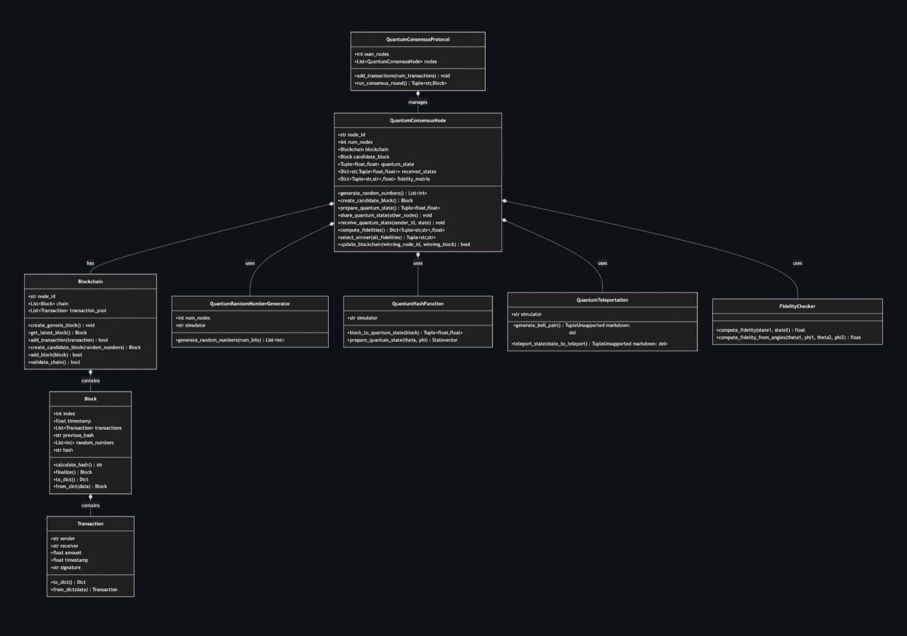
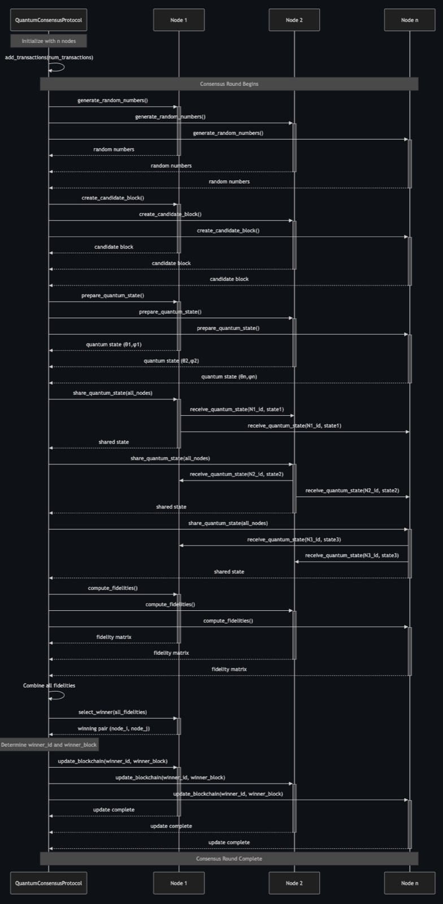

Quantum State Fidelity as a Consensus Mechanism
A blockchain consensus protocol that replaces proof-of-work with quantum-state fidelity checks. Each node encodes its candidate block as a quantum state, and the network agrees on the block whose state the most nodes match. Designed, implemented in Qiskit and evaluated against classical proof-of-work and proof-of-stake in simulation.

Contribution
- Designed a six-phase consensus protocol: quantum random nonces, candidate blocks, quantum state encoding, fidelity comparison, majority agreement and ledger update.
- Built a five-layer quantum hash circuit that maps a block’s hash, transactions, structure and nonce onto a 6-qubit state, so similar blocks produce similar states.
- Implemented the full protocol alongside classical proof-of-work and proof-of-stake baselines on identical block structures, then benchmarked them on simulated networks of 3 to 20 nodes.
- Wrote it up as a research paper covering the theory, mathematical framework, implementation and evaluation.
How consensus works
Proof-of-work asks every node to burn compute on a puzzle. Here, agreement comes from comparing quantum states instead. Each node prepares the state of its own candidate block and compares it with every other node’s using state fidelity, the overlap of two states in Hilbert space:
\[ F_{ij} = \lvert\langle\psi_i\vert\psi_j\rangle\rvert^2 \]
Nodes whose states match closely form an agreement set, with a threshold of 0.9:
\[ \mathcal{A}_i = \{\, j : F_{ij} \geq 0.9 \,\} \]
The proposer is the lowest-ID node with the largest agreement set, and that set must hold more than half the network or the round fails. The winning block is then hashed, distributed and appended, and each node re-verifies its chain.
Encoding a block
The quantum hash is a stack of unitaries, each encoding one aspect of the block:
\[ U_{\text{hash}} = U_{\text{nonce}}\, U_{\text{structure}}\, U_{\text{entanglement}}\, U_{\text{transactions}}\, U_{\text{init}} \]
- Initial state: U gates parameterized by bytes of the block’s SHA-256 hash.
- Transactions: Ry and Rz rotations driven by transaction count, volume and sender diversity.
- Entanglement: a CNOT ring plus a CZ, so no qubit can be changed in isolation.
- Structure: Rx rotations from the block index and timestamp.
- Nonce: phase shifts from the quantum-generated nonce.
Verifiable randomness
Nonces come from an entangled circuit rather than a pseudo-random generator. For \(N\) nodes, the last qubit carries the parity of the others, so every node’s random bit can be checked against the rest: \( b_N = b_1 \oplus b_2 \oplus \cdots \oplus b_{N-1} \).
Results
Benchmarked in noise-free statevector simulation (Qiskit Aer) against classical baselines using the same blocks, transactions and validation.
| Metric | Quantum (simulated) | Proof-of-work | Proof-of-stake |
|---|---|---|---|
| Transactions per second | 124.5 | 7.3 | 78.2 |
| Block finalization time | 12.3 s | 582.4 s | 21.5 s |
| Consensus time, 20 nodes | 2.14 s | 23.76 s | – |
| Byzantine fault tolerance | 33% | 49% | 33% |
Consensus time grew linearly with network size, against roughly quadratic growth for proof-of-work. In simulation the protocol tolerated up to a third of nodes acting maliciously.
These are upper bounds from an idealized simulator, not predictions for real quantum hardware, where decoherence and gate errors would cut into them.
Limitations and next steps
- Runs on simulated quantum operations. Validating on real hardware is the obvious next step.
- The fidelity threshold and hash circuit need calibrating for each network configuration.
- The advantage shrinks in very small networks, below five nodes.
- Noise-resistant circuits for near-term (NISQ) hardware, and alternative encodings with stronger security guarantees, are open directions.
Diagrams
